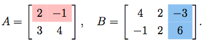
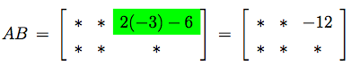

A Complex Number is an expression written in the form $z = \alpha + \beta i$ where $\alpha , \beta$ are real, and $i = \sqrt{-1}$ is a formal symbol satisfying the relation $i^{\, 2} = -1.$ We call $\alpha = \text{Re} \, z$ the real part and $\beta = \text{Im} \, z$ the imaginary part of $z = \alpha + \beta i.$ So a real number $\alpha$ is simply a complex number with zero imaginary part, thus embedding $\mathbb{R}$ as a subset of $\mathbb{C}.$ Formally, therefore, $\mathbb{C} = \mathbb{R} + \mathbb{R} \, i.$
Such properties are useful in simple computations with complex numbers, for instance:
| Problem: Express the quotient $\displaystyle{\frac{z_1}{z_2}}$ in the form $\alpha+\beta i$ when $$z_1 \ = \ 4 + 3 i,\qquad z_2 \ = \ 1 + 2 i.$$ Solution: We use the fact that $$ \frac{z_1}{z_2} \ = \ \frac{z_1 \overline{z_2}}{z_2 \overline{z_2}},$$ | so the denominator is now a real number. Then $$\eqalign{\frac{z_1}{z_2} \ & = \ \frac{(4+3i)(1-2i)}{(1+2i)(1-2i)} \\ & = \ \frac{(4+3i)(1-2i)}{1^2 + 2^2} \\ & = \ \frac{10 -5i}{5} \\ & = \ 2 -i.}$$ |
| Problem: Write the expression $\displaystyle{\frac{z_1}{z_2} - \frac{z_1}{\overline{z_2}}}$ in the form $\alpha+\beta i$ when $$z_1 \ = \ 2-i,\qquad z_2 \ = \ 1 + 2 i.$$ Solution: We use the fact that $$ \frac{z_1}{z_2} - \frac{z_1}{\overline{z_2}} \ = \ \frac{z_1 \overline{z_2} - z_1 z_2}{z_2 \overline{z_2}},$$ so the denominator is now a real number. | When $z_1 = 2-i,\ \ z_2 = 1 + 2 i,$ we have $$z_1 \overline{z_2} - z_1z_2 \ = \ -4 - 8i,$$ while $$ z_2 \overline{z_2} \ = \ (1+2i)(1-2i) \ = \ 5.$$ Thus $$ {\frac{z_1}{z_2} - \frac{z_1}{\overline{z_2}}} \ = \ \frac{-4 - 8i}{5}\ = \ -\frac{4}{5} - \frac{8}{5}i.$$ |
A Vector is an ordered $n$-tuple of real numbers, a list ordered downwards, and written as a column: $$ \ \ {\bf v} = \left[\begin{array}{cc} v_1 \\ v_2 \\ \vdots \\ v_{n} \end{array}\right]. $$ The entries of ${\bf v}$ are its components, and $v_j$ is called the $j^{th}$-component. The set of all such $n$-component vectors will be denoted by $\mathbb{R}^n$ - often called Euclidean $n$-space. Just as we realize Euclidean $1$-space as the number line, Euclidean $2$-space as the set of all ordered pairs $(a, b)$, and $3$-space as the set of all ordered triples $(a,b, c),$ thus we will often realize $\mathbb{R}^n$ as the set of all ordered $n$-tuples $(a_1, a_2, \ldots, a_{n})$ of real numbers. Then we can think and speak of a point $(a_1, a_2, \ldots, a_{n})$ as corresponding to the vector ${\bf a}$ whose components are $a_1, a_2, \ldots, a_{n}$ and vice versa.
The definitions of vector addition and scalar multiplication in $\mathbb{R}^2$ and $\mathbb{R}^3$ extend naturally:
| We add vectors ${\bf u},\ {\bf v}$ in $\mathbb{R}^n$ by $${\bf u} + {\bf v} \ = \ \left[\begin{array}{c} u_1 \\ u_2 \\ \vdots \\ u_{n} \end{array} \right] + \left[\begin{array}{c} v_1 \\ v_2 \\ \vdots \\ v_{n} \end{array} \right] \ = \ \left[\begin{array}{c} u_1 + v_1 \\ u_2 + v_2 \\ \vdots \\ u_{n} + v_{n} \end{array} \right],$$ | and form the scalar multiple $k {\bf v}$ of $k$ in $\mathbb{R}$ and ${\bf v}$ in $\mathbb{R}^n$ by $$k {\bf v} \ = \ k \left[\begin{array}{c} v_1 \\ v_2 \\ \vdots \\ v_{n} \end{array} \right] \ = \ \left[\begin{array}{c} kv_1 \\ kv_2 \\ \vdots \\ kv_{n} \end{array} \right].$$ |
In other words, calculations are done component-wise. For example, in $\mathbb{R}^4$ $$ 3{\bf u} - 5 {\bf v} \ = \ 3\left[\begin{array}{cc} 2 \\ -1 \\ 3\\ 7 \end{array} \right] -5 \left[\begin{array}{cc} 4 \\ -2 \\ 2 \\ 3 \end{array} \right] \ = \ \left[\begin{array}{cc} 6 \\ -3 \\ 9\\ 21 \end{array} \right] - \left[\begin{array}{cc} 20 \\ -10 \\ 10 \\ 15 \end{array} \right] \ = \ \left[\begin{array}{cc} -14 \\ 7 \\ -1 \\ 6 \end{array} \right].$$
General vectors in $\mathbb{R}^n$ have the properties:
The following operation will generalize to matrix multiplication.
An $m \times n$ Matrix with real entries is a set of $mn$ real numbers $a_{j , \, k} \, , 1 \le j\le m,\ 1 \le k \le n,$ listed either as an array with $m$ rows and $n$ columns or as a row of $n$ column vectors as shown in $$ A \ = \ \left[\begin{array}{cc} a_{1,1} & a_{1,2} & a_{1,3} & \cdots & a_{1,n} \\ a_{2,1} & a_{2,2} & a_{2,3} & \cdots & a_{2,n} \\ a_{3,1} & a_{3,2} & a_{3,3} & \cdots & a_{3, n} \\ \vdots & \vdots & \vdots & \ddots & \vdots \\ a_{m,1} & a_{m, 2} & a_{m,3} & \cdots & a_{m, n} \end{array}\right] \ = \ \big[\begin{array}{cc} {\bf a}_1 & {\bf a}_2 & \ldots & {\bf a}_{n}\\ \end{array}\big] $$ where $${\bf a}_1 = \left[\begin{array}{c} a_{1,1} \\ a_{2,1} \\ \vdots \\ a_{m,1} \end{array} \right], \quad {\bf a}_2 = \left[\begin{array}{c} a_{1,2} \\ a_{2,2} \\ \vdots \\ a_{m,1} \end{array} \right], \quad \ldots , \quad {\bf a}_{n} = \left[\begin{array}{c} a_{1,n} \\ a_{2, n} \\ \vdots \\ a_{m,n} \end{array} \right]$$ are column vectors in $\mathbb{R}^m$. These definitions will be used interchangeably. To keep from drowning in notation, however, it's common to write a matrix as $A = [a_{j, \, k}]$ instead of writing out all the entries in $A$. The set of all $m \times n$ matrices with real entries will be denoted by $M_{m \times n}(\mathbb{R})$.
For each $n,$ there is a unique Identity Matrix in $M_n(\mathbb{R}).$ This is the matrix with $1$'s down the diagonal, and $0$'s otherwise. $$ I_n = \left[ \begin{array}{cccc} 1 & 0 & \cdots & 0 \\ 0 & 1 & \cdots & 0 \\ \vdots & \vdots & \ddots & \vdots \\ 0 & 0 & \cdots & 1 \\ \end{array} \right] $$ By $0_{m , \, n} \in M_{m \, \times \, n}(\mathbb{R})$ and $0_n \in M_n(\mathbb{R})$ we mean the appropriately sized matrix whose every entry is $0.$
Addition and scalar multiplication of matrices are defined as follows:
| We add matrices $A, B \in M_{m \times n}(\mathbb{R})$ entry-by-entry: $$A + B \ = \ [a_{j , \, k}] + [b_{j , \, k}] \ = \ [a_{j , \, k} + b_{j , \, k}].$$ In particular, $A + B$ is defined only when both $A$ and $B$ are $m \times n,$ i.e., have the same shape, and then $A + B$ also has the same shape since it is $m \times n$. For example, $$\left[\begin{array}{ccc} 1 & 2 & 3 \\ -3 & 4 & -1 \\ \end{array}\right] + \left[\begin{array}{ccc} 4 & -1 & 1 \\ 2 & -4 & -1 \\ \end{array}\right]\ = \ \left[\begin{array}{ccc} 5 & 1 & 4 \\ -1 & 0 & -2 \\ \end{array}\right].$$ | We define the scalar multiple of $k \in \mathbb{R}$ and $A \in M_{m \times n}(\mathbb{R})$ by $$k A \ = \ k [a_{j , \, k}] \ = \ [k a_{j , \, k}].$$ Thus each entry in $A$ is multipled by $k;$ in particular, the scalar multiple $k A$ of an $m \times n$ matrix $A$ also is $m \times n,$ so scalar multiplication preserves shape since the scalar multiple $k A$ is again $m \times n$. For example, $$3 \left[\begin{array}{cc} 1 & 2 & 3 \\ -3 & 4 & -1 \\ \end{array}\right]\ = \ \left[\begin{array}{cc} 3 & 6 & 9 \\ -9 & 12 & -3 \\ \end{array}\right].$$ |
Matrices have the same algebraic properties that vectors have. To introduce multiplication, let's begin with the product of a matrix and a vector:
Collecting all these concepts together we can solve:
|
Problem: Determine the vector
$${\bf v} \ = \ \left[\begin{array}{cc} 2 & 1 \\ 4 & 2 \\
\end{array}\right] \left[\begin{array}{c} 2 \\ 3 \\
\end{array}\right] - 5 \left[\begin{array}{c} 1 \\ 3 \\
\end{array}\right]$$
in $\mathbb{R}^2$.
Solution: Using the properties of matrices above, |
$$ \left[\begin{array}{cc} 2 & 1 \\ 4 & 2 \\ \end{array}\right] \left[\begin{array}{c} 2 \\ 3 \\ \end{array}\right] \ = \ 2 \left[\begin{array}{c} 2 \\ 4 \\ \end{array}\right] + 3 \left[\begin{array}{c} 1 \\ 2 \\ \end{array}\right] \ = \ \left[\begin{array}{c} 7 \\ 14 \\ \end{array}\right].$$ So $${\bf v} \ = \ \left[\begin{array}{c} 7 \\ 14 \\ \end{array}\right] - 5 \left[\begin{array}{c} 1 \\ 3 \\ \end{array}\right] \ = \ \left[\begin{array}{c} 2 \\ -1 \\ \end{array}\right].$$ |
We can multiply two matrices if they have the appropriate relative sizes. Namely, we can multiply matrices $A$ and $B$ if the number of columns of $A$ equals the number of rows of $B.$
For example,
|
Suppose we wish to calculate the $(1,3)$-entry in the product
$AB$ of the matrices
 We will need to take the dot product of the ${\bf r}_1$ row of $A$, highlighted in pink, with the ${\bf a}_3$ column of $B$, highlighted in blue. Then, as highlighted in green, the $(1,3)$-entry in the matrix product $AB$ is given by |
 The remaining entries can now be computed in the same way, showing that the matrix product $A B$ is the $2 \times 3$ matrix $$ \left[\begin{array}{cc} 2 & -1 \\ 3 & 4 \\ \end{array}\right] \left[\begin{array}{cc} 4 & 2 & -3 \\ -1 & 2 & 6 \end{array} \right] \ = \ \left[\begin{array}{cc} 9 & 2 & -12 \\ 8 & 14 & 15 \\ \end{array} \right].$$ |
Many of the familiar multiplicative properties of real numbers carry over to matrix multiplication.
But some multiplicative properties of real numbers do not carry over to matrices:
|
Failure of Commutativity:
The equality $AB = BA$ need not always hold for matrices $A, B.$ For example, $$ AB \ = \ \left[\begin{array}{cc} 0 & 1 \\ 0 & 2 \\ \end{array}\right] \left[\begin{array}{cc} 0 & 2 \\ 0 & 1 \\ \end{array}\right] \ = \ \left[\begin{array}{cc} 0 & 1 \\ 0 & 2 \\ \end{array}\right],$$ while $$ BA \ = \ \left[\begin{array}{cc} 0 & 2 \\ 0 & 1 \\ \end{array}\right] \left[\begin{array}{cc} 0 & 1 \\ 0 & 2 \\ \end{array}\right] \ = \ \left[\begin{array}{cc} 0 & 4 \\ 0 & 2 \\ \end{array}\right].$$ |
Existence of Zero Divisors:
There are matrices $A$ and $B$ such that $AB = 0$ but neither $A$ nor $B$ is $0$ (i.e. the zero matrix). For example, when $$ A \ = \ \left[\begin{array}{cc} 0 & 1 \\ 0 & 0 \\ \end{array}\right], \quad B\ = \ \left[\begin{array}{cc} 0 & 2 \\ 0 & 0 \\ \end{array}\right],$$ then $$ AB \ = \ \left[\begin{array}{cc} 0 & 1 \\ 0 & 0 \\ \end{array}\right] \left[\begin{array}{cc} 0 & 2 \\ 0 & 0 \\ \end{array}\right] \ = \ \left[\begin{array}{cc} 0 & 0 \\ 0 & 0 \\ \end{array}\right].$$ |